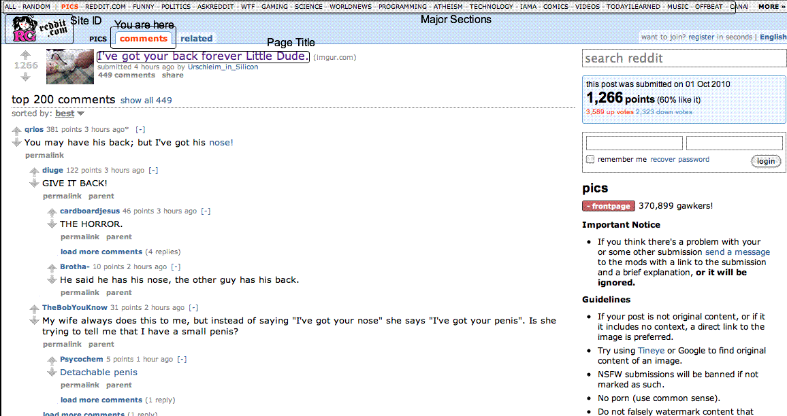

Website Evaluation - Reddit - Navigation
Labelled navigation
What site is this? (Site ID)
The site id is found in the top left of the web page below a list of popular subreddits and above the rest of the page content.
What page am I on? (Page name)
Article page headers reflect the layout of article headlines in the news feed. When this layout moves out of the news feed and into the most prominent part of the web page, it is apparent that the user is on the page for that article. The page title is also large, blue, and prominent.
What are the major sections of this site? (Sections - tabs)
Subreddits are what act as major sections of reddit. These are listen in the top runner.
What are my options at this level? (Local navigation)
Options are displayed in blue tabs at the top of the page.
Where I am? ("You are here" indicators or breadcrumbs)
Orangered text and white tabs tells the user where they are.
Can you easily find your way? back home? other sections?
Like most other sites, reddit links their logo image back to their home page.
Other sections are always offered at the top of the page in a runner.
How can I search?
If related discussion is found, a new tab appears at the top of the page. The user can always do a manual search by using the form at the top of the right sidebar.